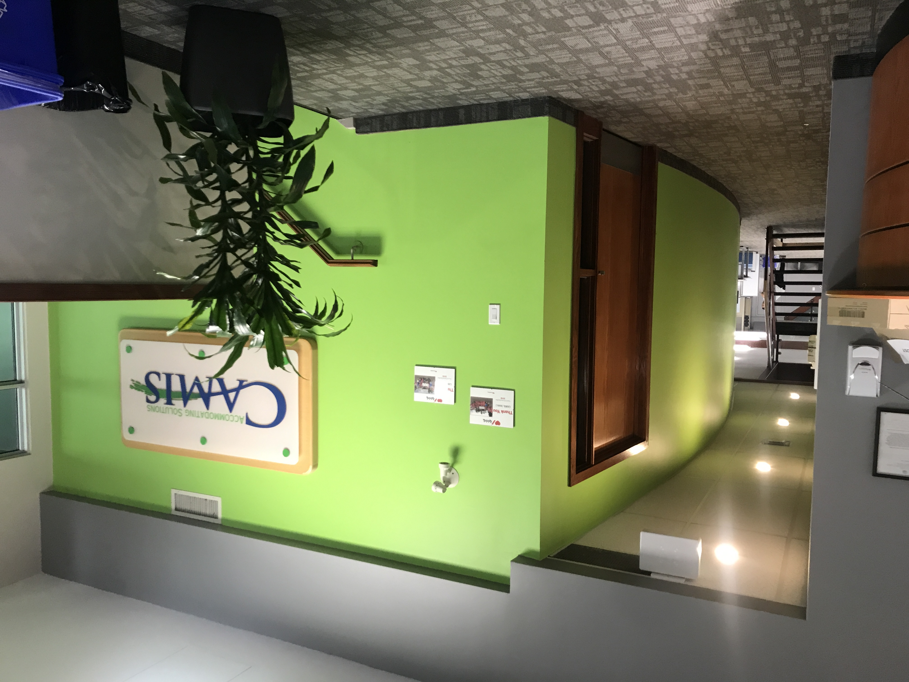
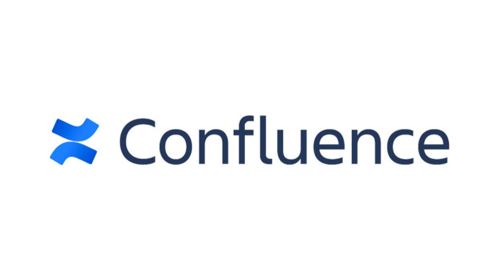
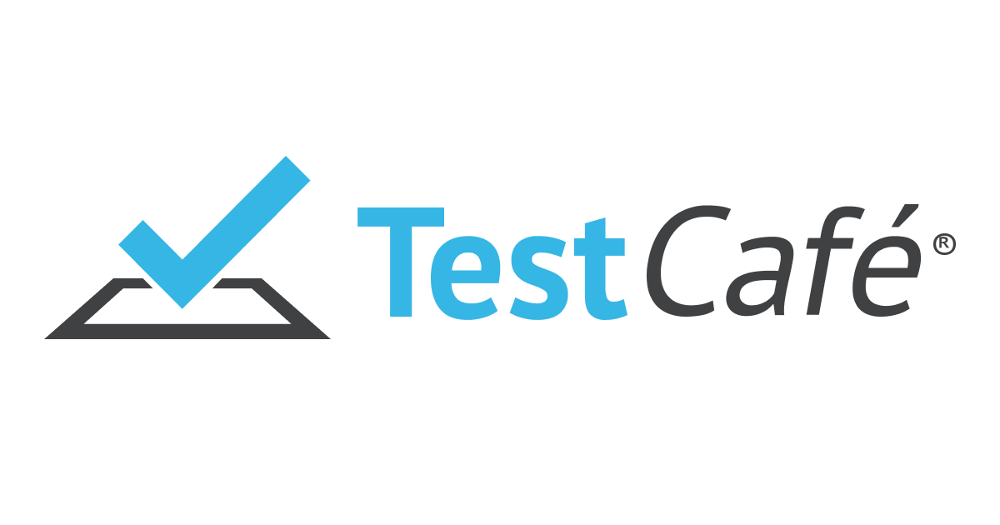

During my summer co-op at Camis Inc. as a software developer, my main tasks were to create test
scenarios, make test plans and execute them. I was a part project from beginning to end. It was
called 'Rental Dashboard'.
In this website, I explained about my employer, my goals and job description. At the end, I
highlighted the details explained in the website.
My Employer
My Employer was Camis Inc.
For more than 40 years, Camis has offered government-run parks, marinas, and harbours reservation and
park management systems.
Camis reservation systems have developed over the course of four decades, moving from phone calls and
paper lists to the powerful, feature-rich software solutions you see today. There are different teams
such as product squad, development squad, QA team, insight squad, etc. I was the part of insight squad.
My team had 7 members. During my co-op term, my manager got changed, but I was able to get adjusted to
the sudden changes that were made by new manager. My team was very supportive and helplfull. Everyone
was determined to complete the task on time with utmost precision.
Skills Learned
Goals and Job Description
There were some goals that I designed while working at Camis.
They are listed below:
GOAL 1: To gain experience in teamwork at a professional level Action Plan 1: Participate in every team meeting.
Communicate with team members.
Observing how the experienced members work Measure of Success 1: Understood the working of the team.
I participate in every meeting, communicating with members and observing different tasks of team
members.
GOAL 2: To learn how the business is operated. Learn technical skills and tools to
use in a professional environment. Action Plan 2: Listen and observe the conversation about client meetings.
Tries to talk to members who are not on the team
Attend learning workshops and sessions about technical stuff Measure of Success 2: Get to know how a company operates on a high level.
Also, familiarised myself with internal working to meet the
requirements of different clients.
GOAL 3: Manage time for both learning and accomplishing the task. Action Plan 3: I Make a timetable for each day in the morning.
Takes out time to learn about technical environment tools Measure of Success 3: Successfully following the timetable, making changes as
needed
to it according to the task I have to complete.
GOAL 4: Reading a lot of different documents to understand and adapt to
the working of the new environment. Action Plan 4: Try to understand what I read by practicing it.
Try to understand what I read by practicing it.
Take help from others. Measure of Success 4: Read about different reports and documentation and played
with
camis software to understand what is happening.
Doubts were cleared by my co-workers and seniors through
different meetings and communication platforms.
GOAL 5: Learn to create and execute test plans. Action Plan 5: Look at the different test plans that are already created by
different team members.
Surf through the internet to understand them.
Take help from seniors and co-workers. Measure of Success 5: Created test scenarios successfully.
Working on creating detailed test plans using JIRA
Executing Test plans.
Let's peek into what I did at my job
My Job Description
Data management, business logic, and user interfaces are just a few of the areas that Developer
Co-ops are expected to contribute to in the development of Camis software. I was a part of a major
project from beginning to the end. I am proud that the project started with my work and also ended
with my work. There was a lot of brainstroming and working with other team members was involved. The
project was called 'Rental Dashboard'. This project's motive was to display information related to
the rentals bought in the separate Dashboard. It had different requirements depending on the client
it was made for. I created test scenarios, made test plans and executed them. Apart from this I
worked with different 'Billing Reports'. It was very senistive work as billing reports are used to
calculate the commission earned by Camis from its clients. So I had to test and create each and
every scenario very carefully.
Essential Functions:
60% Operational Work
Program maintenance is the process of recreating, identifying, and resolving errors in any Camis
software.
Keeping up with unit tests as needed. Responding to bug reports and tickets,
aiding in product design evaluations. To do my job, I made use of applications including JIRA,
Tableau, Slack, Confluence, SQL Server, and TestCafe. 35% Product Road Map
Add additional unit tests as well as new features, enhancements, and corrections to Camis apps.
The distribution of the tasks over the duration of my co-op term is seen in this percentage chart.
5% Active Participation
Actively participating as part of the software development team, including team meetings, testing,
park trips, and other duties as assigned by the project lead and/or reporting manager.
Challenges
Since the Developer Co-op will need to maintain expertise in a larger range of technologies than
others, this position requires a great deal of adaptability.

Camis Inc. (1 / 6)

Confluence (2 / 6)
3 / 6
JIRA (3 / 6)
Tableau (4 / 6)
SQLserver (5 / 6)

TestCafe (6 / 6)
Conclusion
It was a wonderfull experience to work at Camis Inc. There's a lot that I gained while
working. First of all, I never knew that there's so much going on behind reserving a campsite. Before
joining, I went through the job descriptiton, I found that there were a lot of opportunities to learn about
testing and product review at Camis. I designed my goals keeping in my mind not only technical aspects of
the job, but also business and interpersonal skills. My main tasks was to perform tests on different
features. Due to different learning sessions and meeting, I was able to achieve my each and every goal.
Apart from the technical skills, I get to know how to interact with clients and team members at a
professional level. The experience that I gained at Camis will help me in honing my skills to the next
level, which will eventually help me to fulfill my future goals.
Contact me
Get in Touch
You can contact me direclty from the website using the given method